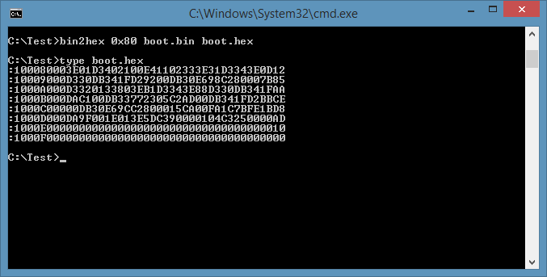

Do you need to convert a binary file into Intel Hex format?
There are some tools around that do that but the smallest / simplest /easiest one I found is a 16 bit app that won’t run under Windows 10 (nor probably my Win 8 x64 laptop). It’s a pity because it looked pretty good. Simple, easy to use, and small in size.
I could probably run it in an emulator or a ‘virtual machine’; but running an 8086 emulator to run something I need for a Z80 emulator seems like a long build chain. It is unfortunate that Windows no longer supports 16 bit apps but there’s a simple way forward: make one. So here it is:
–
small,
simple, easy to use.
– converts binary files to Intel hex
format
– accepts an address argument so you can position
the binary where it’s needed
– allows you to
transfer binary files as text
– should be usable with PROM
programmers
– runs on Win10 x64 (or earlier), and x32
–
open source software
It
doesn’t do the following yet:
– fancy features from
the original
– padding / fill to a fixed length
You
can download the program from cpm/bin2hex/bin2hex.exe
You
can download the source code from cpm/bin2hex/bin2hex.c
The original is http://www.keil.com/download/docs/113.asp